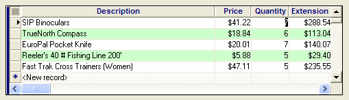

How to Color Alternating Rows in an Browse
Edit the form and click  ( Form >
Calculated Fields ) to add the following calculated fields to the
form or browse. The example shown here is for the Invoice
form in AlphaSports.
( Form >
Calculated Fields ) to add the following calculated fields to the
form or browse. The example shown here is for the Invoice
form in AlphaSports.
|
Variable Name |
Expression |
|
run_cnt |
run_count(Invoice_Items->Product_Id,
GRP |
|
flag_color |
iif(mod(calc->run_cnt, 2) = 0, "even", "odd") |
In the case of your own set, replace invoice_items->product_id with ANY field from the one-to-many child table. Replace invoice_header with the name of the one-to-many table's parent table.
If you are working with an embedded browse that displays data from the form'stable, the calculated fields would be as follows.
|
Variable Name |
Expression |
|
run_cnt |
run_count(Invoice_Number) |
|
flag_color |
iif(mod(calc->run_cnt, 2) = 0, "even", "odd") |
In the case of your own table, replace invoice_number with ANY field from the table.
You do not need to place either of these calculated fields in the embedded browse, but you might find it useful to put run_cnt in the embedded browse, because it will number the rows. You can hide the column afterwards.
Next, double click on the embedded browse to edit it. Select each column in turn, right click, and select Properties > Other and enable the color equation.
Enter the following color equation for each column:
|
case(calc->Flag_Color="even","Black on Light Turquoise",.T.,"Black on White") |

See Also
Embedded Browse Control, Using the Browse Editor